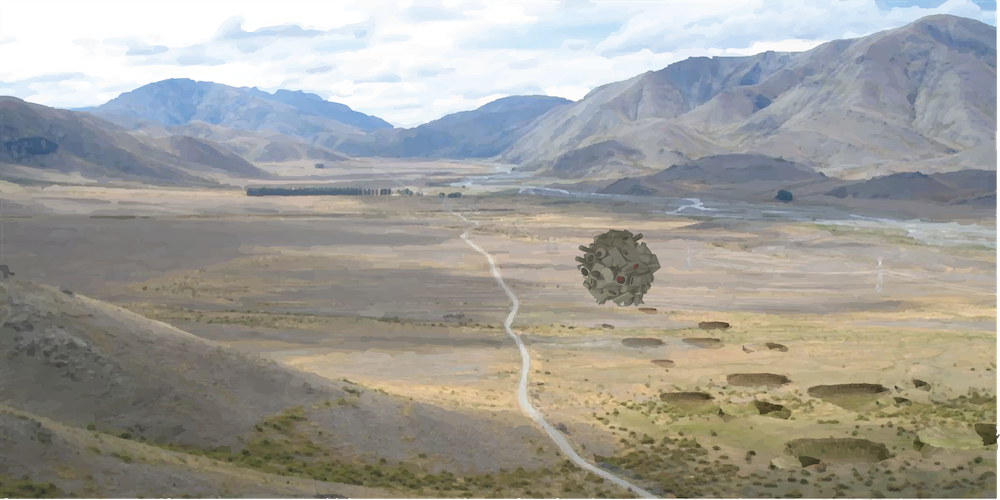

The Hundred-Lifetime Fiath
THE MORE THINGS CHANGE, THE MORE THINGS STAY THE SAME

The Presageric Order of American Nuclear Anchorites is a state-sponsored, quasi-religious institution established by the federal government of the United States of America. The role of the Order’s acolytes is:
- To communicate the dangers of nuclear waste stored at the nearby Yucca Mountain Waste Repository
- To maintain the relevance and vernacularity of their lessons for at least 10,000 years
- To maintain their central temple: a rolling structure that crosses the desert plains of the Nevada National Security Site which is known as the “Temple to Perpetuity,” or sometimes the “Aevis Aevum,” or the “Fane of the Rabbit Tooth”
- To create a redundant “relay network” of multiple myths and legends that can be passed on to their children and future converts
These objectives are based on the theories of Thomas Sebeok, a semiotician who first proposed the idea of an “atomic priesthood” in his 1984 report "Communication Measures to Bridge Ten Millenia."
Become an Acolyte Today!